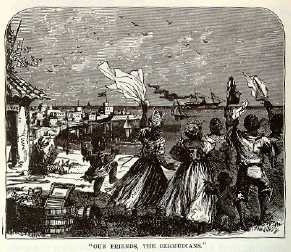

BermudaDays passed--and nights; and then the beautiful Bermudas rose out of the sea, we entered the tortuous channel, steamed hither and thither among the bright summer islands, and rested at last under the flag of England and were welcome. We were not a nightmare here, where were civilization and intelligence in place of Spanish and Italian superstition, dirt and dread of cholera. A few days among the breezy groves, the flower gardens, the coral caves, and the lovely vistas of blue water that went curving in and out, disappearing and anon again appearing through jungle walls of brilliant foliage, restored the energies dulled by long drowsing on the ocean, and fitted us for our final cruise--our little run of a thousand miles to New York--America--HOME. We bade good-bye to "our friends the Bermudians," as our programme hath it--the majority of those we were most intimate with were negroes--and courted the great deep again. I said the majority. We knew more negroes than white people, because we had a deal of washing to be done, but we made some most excellent friends among the whites, whom it will be a pleasant duty to hold long in grateful remembrance. |